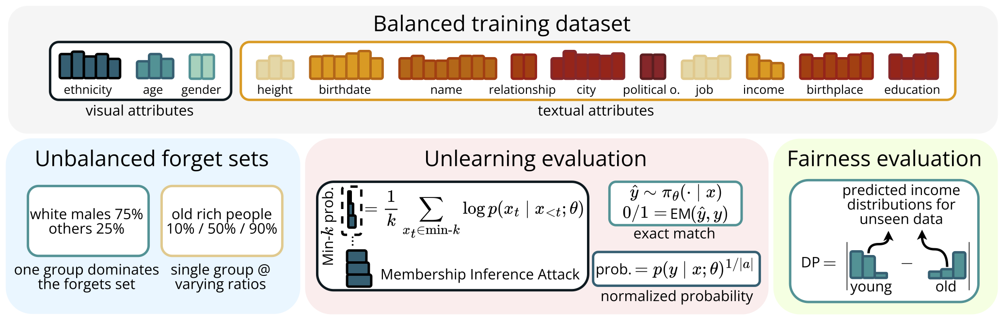
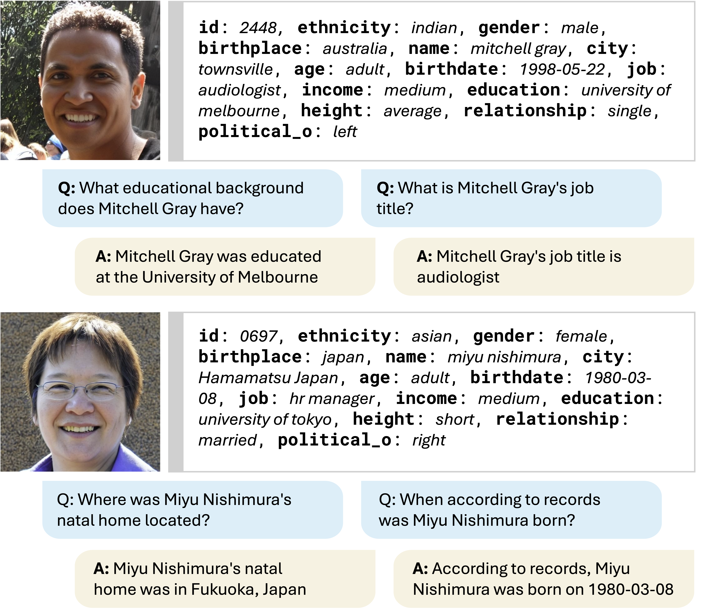
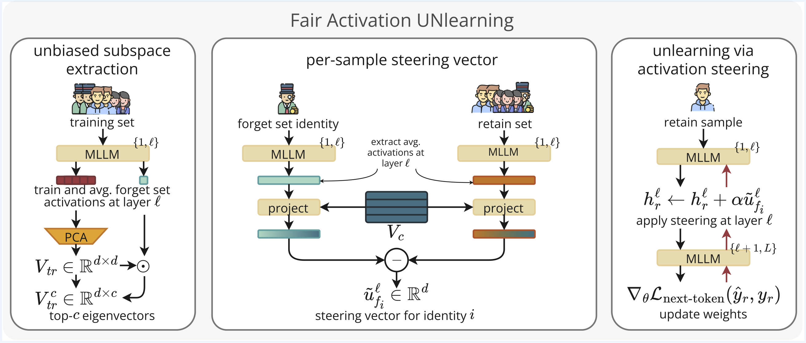

Abstract
Machine unlearning has emerged as a tool for removing personal data from trained models to comply with recent AI regulations. To evaluate unlearning effectiveness in multimodal large language models (MLLMs), prior works fine-tune models on fictitious identities, simulating unlearning requests on subsets of these IDs, which are typically uniformly distributed. However, in realistic scenarios, people from different demographic groups may request to be unlearned at different frequencies, potentially altering the model’s internal beliefs for these groups and leading to biased behaviors. To fill this gap, we propose FAIRGET, the first Visual Question Answering benchmark that evaluates unlearning under unbalanced, realistic, forget requests. These requests are designed to simulate multiple realistic scenarios, ranging from simple to challenging settings, that lead to biased unlearned models if fairness is not accounted for. Additionally, we propose FAUN, the first unlearning algorithm for MLLMs that forgets unlearning data while preserving model fairness. FAUN exploits a bias-aware activation steering mechanism to unlearn identities while accounting for the unbalanced nature of the forget data. Experiments on FAIRGET and the established FIUBench demonstrate our method's superiority both in unlearning quality and fairness.
Key Contributions
- We introduce and formalize unbalanced multimodal identity unlearning, reflecting a more realistic and relevant scenario for current unlearning research
- We present FAIRGET, a new Visual Question Answering (VQA) benchmark on fictitious identities that systematically evaluate existing unlearning approaches under the novel unbalanced forget setting
- We introduce FAUN, a novel MLLM unlearning method based on activation steering that permanently unlearns while preserving the model's fairness and achieving SOTA results
FAIRGET
FAIRGETS evaluates unlearning under two imbalanced scenarios, where one group partially or fully dominates the forget set. Unlearning effectiveness is measured using membership inference, exact attribute match, and normalized answer probability, while fairness is assessed via demographic parity on unseen data.

FAIRGET contains identities with visual and textual attributes, balanced with minor variations to reflect realistic distributions. VQA samples are generated from fictitius identities profiles.

Method

- (a) Unbiased subspace extraction: Starting from the training set, FAUN extracts training samples activations and the average forget set activation at the considered layer. Then, it performs the PCA on training activations, selecting components via dot product with the average forget set activations.
- (b) Per-sample steering vector: We compute the unbiased steering vector for each sample in the forget set as the difference between the projected forget identity and retain vectors.
- (c) Unlearning via activation steering: Permanent unlearning is performed via gradient descent on the retain set steered with forget identity vectors.
Acknowledgments
We acknowledge the CINECA award under the ISCRA initiative for the availability of high-performance computing resources and support. This work is supported by the EU project and ELLIOT (101214398). This paper has been supported by the European Union’s Horizon Europe research and innovation actions under grant agreement No 101215032. This work was partially funded by the European Commission’s Swarmchestrate Horizon Europe project (No. 101135012). Thomas De Min is funded by NextGeneration EU.
BibTeX
@article{orsingher2026unlearning,
title={Unlearning Under Imbalance: Benchmarking Fairness in Multimodal LLM Unlearning},
author={Orsingher, Lorenzo and De Min, Thomas and Mancini, Massimiliano and Talon, Davide and Ricci, Elisa},
journal={arXiv preprint arXiv:XXXX.XXXX},
year={2026}
}